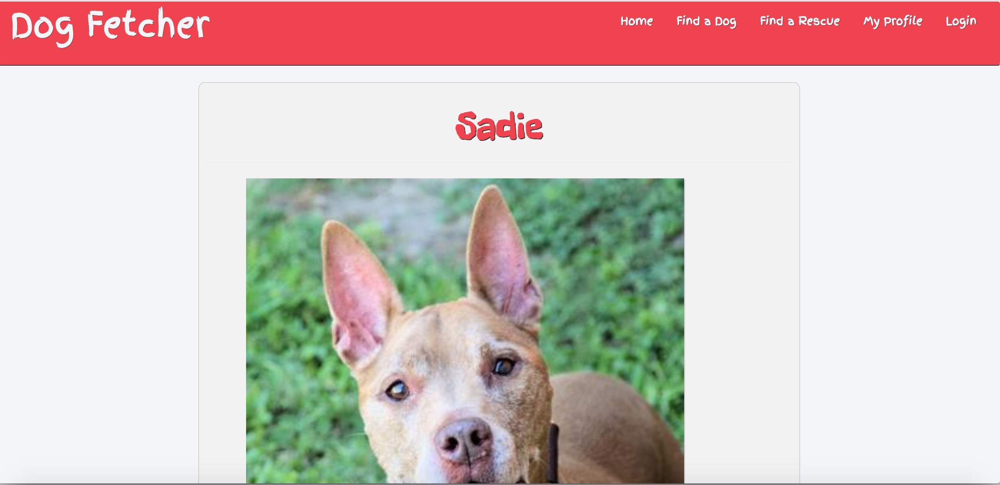
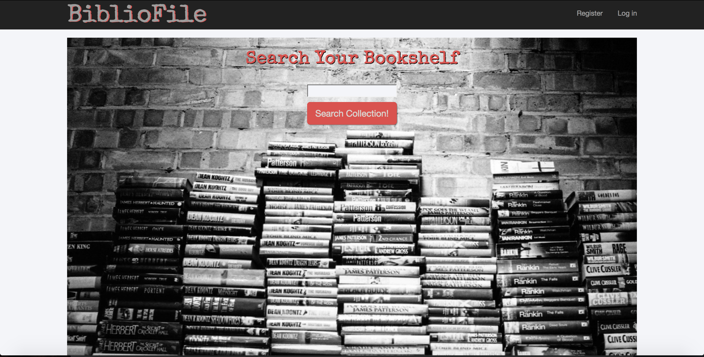

A little bit about me...
I'm a lifelong learner with a passion for solving problems. There is nothing more gratifying than figuring out a solution
and discovering something new along the way. Crafting software is a perfect marriage of the two. Whether its working
with a new framework or learning a new language, the best part about coding is there's always something new to learn
and more to master.
When I'm not trying to make computers do stuff, you can find me reading books, trying new craft beers, attempting to
cook new recipes, listening to music, watching movies, hanging out in my local comic book shop and/or playing with
my dogs. My dogs keep me busy.
Some of the Stuff I've Used.
I've worked with the tech below to varying degrees. Some I'm a still a novice at, but all of them I will eventually
master.
Some Projects I've Worked On.
DogFetcher

A single page web application built to help users find rescue dogs in their local area. Using the PetFinder.com API,
a random dog is displayed upon page load. The user is able to save the dog to their profile, view a listing of twenty
five local shelters in the Nashville, TN area, as well as the complete listings for each shelter. Built with AngularJS,
Sass, Bootstrap and Firebase.
BiblioFile

BiblioFile is an MVC web app that allows uses to catalogue what’s on their bookshelf, both what has been read and what
the user is planning on reading. The user’s collections are searchable and books can be added or removed at any time.
User’s books can also be moved from the “To Read” section to the “Read” table. Built using C#/.NET, ASP.NET, SQLite
and Bootstrap.
Methods to Contact Me.
If you'd like to get in touch, shoot me an email. I'll reply as soon as I can. If you'd like to what I'm working on, please checkout my GitHub repos, or feel free to connect on LinkedIn. I look forward to hearing from you!